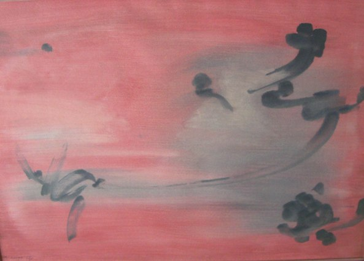

Nasser Assar
1928–2011
Artist Biography
Nasser Assar was once described as “Persia’s greatest living painter” and is included in the Tehran Museum of Contemporary Art’s collection. He studied at Tehran’s School of Fine Art and then at the Beaux-Arts, Paris where he has lived since 1953. Assar’s work in the 1960s drew comparison with Mark Rothko and he represented France at both the second and third Paris Biennales in 1961 and 1963. He was strongly influenced by Chinese wash-point technique and calligraphic effects, and his work was considered as being linked to that of the ‘cloud’ movement (nuagisme) in France. His first show was in Tehran in 1952 and this was followed by major exhibitions in London in 1961, Brussels and Washington. He also took part in prestigious group exhibitions in Vienna in 1959 and Paris in 1960. Assar continued to exhibit widely and is increasingly highly regarded in Iran and the wider Middle East.

Untitled, 1962